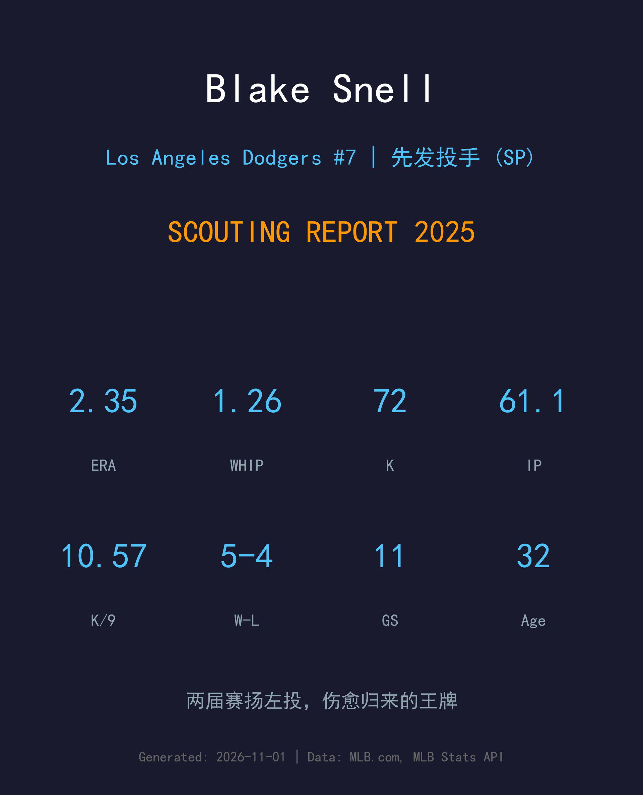
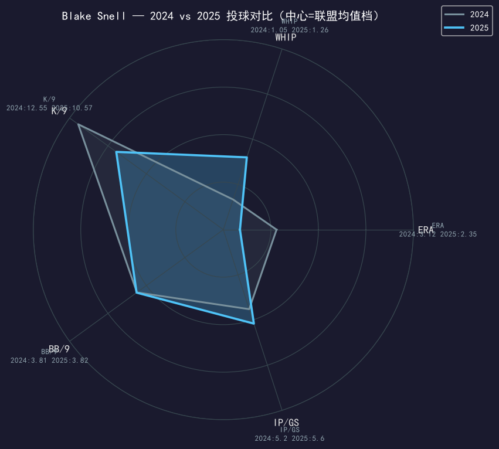
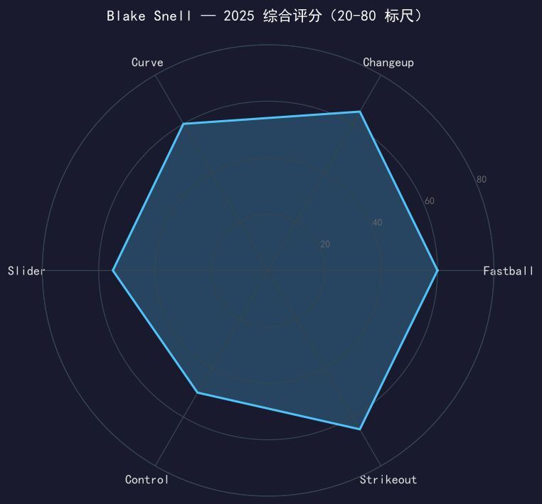

Los Angeles Dodgers #7 | 先发投手 | 左投 | 两届赛扬左投，伤愈归来的王牌

Blake Snell 是这份名单上荣誉最重的名字：2018 年美联赛扬、2023 年国联赛扬，两届赛扬得主。当他的肩膀健康、他的变速球落在好球带边缘时，他仍然是这个星球上最难对付的左投之一——2025 年 11 场先发的 2.35 ERA 就是证据。
但 2025 年的故事一半是火焰一半是阴影：6 月肩伤手术让赛季定格在 61.1 局，而他和道奇用接下来的四个月完成了一次「医学奇迹」——10 月回归季后赛，12 次登板、3 胜 2 负、34 局 41 次三振，以冠军成员的身份站上世界大赛之巅。
从 2025 年 11 月的视角看，围绕他的只有两个问题：肩伤后的他还能不能把场均 5-6 局的先发工作扛回来？以及那份包含球员选项的合同最终会走向何方。其余的问题，历史已经回答过了。
效力坦帕湾光芒时期以 21 胜、1.89 自责分率摘下美联赛扬，成为当时联盟最具统治力的左投之一。
转投圣迭戈教士后再夺赛扬——横跨美联、国联双双封王，正式跻身历史级投手行列。
11 场先发 2.35 自责分率、K/9 10.57，却在 6 月因肩伤提前报销——61.1 局的样本里，他投出了赛扬级的每一场。
从 6 月手术台到 10 月季后赛：12 次登板、3 胜、34 局 41 次三振，随道奇一路夺冠——这可能是他生涯最动人的一页。

| 赛季 | G | GS | W-L | ERA | WHIP | IP | SO | BB | K/9 |
|---|---|---|---|---|---|---|---|---|---|
| 2024（伤愈复出年） | 20 | 20 | 5-3 | 3.12 | 1.05 | 104.0 | 145 | 44 | 12.55 |
| 2025（肩伤截断） | 11 | 11 | 5-4 | 2.35 | 1.26 | 61.1 | 72 | 26 | 10.57 |
两年的对照完美诠释了「Snell 模式」：2024 年 1.05 WHIP 配 3.12 ERA，2025 年 WHIP 涨到 1.26 但 ERA 反而降到 2.35——他的投球从不在意让打者上垒，只在意不让他们得分。被打击率被垒包数上升，但 HR/9 压到 0.44、关键时刻的三振依然锋利。唯一真正的损失是局数：104 → 61.1，肩伤把一切都缩短了。
2025 赛季真实配球数据（MLB Stats API pitchArsenal）：
配球基石。速球本身不追三振，任务是把打者的视线架高，为落差极大的变速球与曲球做铺垫。
两颗赛扬的共同签名。近 10 mph 的速差加上坠点深的特性，让左右打者都只能提前猜——猜错就是挥空。
纵向落差极大的 12-6 曲球，与变速球构成「一深一坠」的双变化球体系，打者很难在同一打席同时应付。
对右打者的横移武器，配球比例不高但关键时刻经常作为两好球后的终结一投。
1.26 的 WHIP 配 2.35 ERA，很多分析师会拿 FIP 说事，但 Snell 的这套「放小放大」哲学已经赢了两次赛扬。他的配球设计就是允许零星安打，然后用变速球+曲球把打者锁在得点圈外。BB/9 3.82 偏高是真实缺陷，但他生涯 3.10 的 ERA 说明这套哲学经得起检验。
从 6 月肩伤手术到 10 月季后赛登板，只用了约四个月。12 次登板 34 局、41 次三振、3 胜——教练组没有把他当「象征性回归」，而是直接当武器用。混合了先发与中继的角色里，他证明肩伤没有带走那颗变速球的魔力。世界大赛舞台上，两届赛扬的经验值无法被任何数据模型替代。
2024 年 104 局、2025 年 61.1 局，加盟道奇两季合计 165.1 局——这与 1.82 亿美元合同的预期有距离。32 岁、肩伤手术史、赛扬级 stuff：这是一份「收益极高、方差极大」的资产。休赛期的选项决定与春训体检报告，将决定 2026 年他是王牌还是回忆。

健康时仍是联盟顶级左投
A- 级 / 王牌级（健康变量）
道奇 2025 季后赛夺冠之路：外卡 2-0 红人 → NLDS 3-1 费城人 → NLCS 4-0 酿酒人 → 世界大赛 4-3 多伦多蓝鸟。
Snell 的季后赛是整季最伟大的叙事：12 次登板、3 胜 2 负、34 局、41 次三振、自责分率 3.18——全部建立在 6 月肩伤手术的康复之上。
Blake Snell 的休赛期注定不会安静。合同中的球员选项是全联盟最受关注的几份文件之一——跳出还是留守，将同时影响道奇的轮值蓝图与自由市场顶投的定价体系。从纯竞技角度，2025 年 11 月的他价值清晰：只要肩膀允许他投 150 局，他就是任何轮值里的二号人物。
理想剧本：健康完整赛季，回到 170+ 局赛扬竞争行列
现实基准：150 局左右的优质先发，间歇性 IL 名单
上行惊喜：季后赛模式移植常规赛，道奇轮值双王之一
Blake Snell 来自西雅图，2016 年登上大联盟。他的生涯曲线像他的变速球一样起伏剧烈——2018 年 21 胜美联赛扬、2023 年教士时期国联赛扬，两次巅峰之间却总有伤病与局数争议。他是那种让你同时写下「天才」与「问号」的投手。
2023 年休赛期，道奇用一份 5 年 1.82 亿美元的合同把他带到洛杉矶——这是对他赛扬血统的押注，也是对他耐久度的赌局。2024 年 104 局、2025 年 61.1 局，合同的前两年只兑现了一半，但 2025 年 10 月的 12 场季后赛让这笔投资的口碑彻底反转。
从手术台到世界大赛香槟，Blake Snell 用五个月完成了生涯最不可思议的回归。2025 年 11 月的他站在十字路口，但无论选择哪条路，这个秋天发生的一切已经写进了道奇队的季后赛传奇。